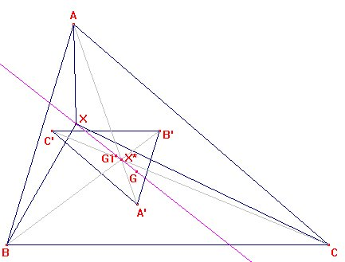
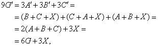
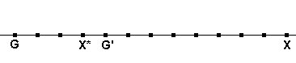
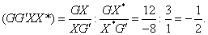

| Sea X un punto arbitrario del triángulo
ABC. Construimos los puntos C', B', A' como
los centros de gravedad de los triángulos ABX, AXC
y BXC. Sea X* el punto de intersección de las rectas
AA', BB', y CC'. Se pide : a) El triángulo A'B'C' es homotético al triángulo ABC, Calcular el centro y la razón de la homotecia. b) Si G y G' son los centros de gravedad de los triángulos ABC, y A'B'C', respectivamente, probar que los puntos G, G', X y X* son colineales y calcular su razón doble. |
|
Romero, J.B.(2005): Comunicación
personal
|
(Segunda) solución de Francisco Javier García Capitán.

Sea X un punto cualquiera. Asignando peso 1 a cada uno de los puntos A, B, C, X y considerándolos por ternas tenemos las relaciones A + B + C = 3G, A + B + X = 3C', C + A + X = 3B', B + C + X = 3A'. También, asignando peso 1 a A', B', C', tenemos A' + B' + C' = 3G'.
Entonces A + 3A' = A + (B + C + X) = (A + B + C) + X = 3G + X. De forma análoga, también B + 3B' = C + 3C' = 3G + X. Olvidémonos de de la definición de X* en el enunciado y consideramos que X* es el punto del segmento GX tal que GX* : X*X = 1:3. Es decir, 4X* = 3G + X. Entonces, el punto X* pertenecerá efectivamente, tal como afirma el enunciado, a las rectas AA', BB' y CC' siendo además A + 3A' = B + 3B' = C + 3C' = 4X*. Expresado de otra forma, tendremos AX* : X*A' = BX* : X*B' = CX* : X*C' = 3:1, y cambiando el orden de los puntos,
X*A' : X*A = X*B' : X*B = X*C' : X*C = -1/3.
Deducimos que el triángulo A'B'C' es homotético al triángulo ABC con centro X* y razón de homotecia -1/3.
Ahora, considerando que 4X* = 3G + X y que

deducimos no sólo que G, G', X y X* están alineados, sino también cuál es la ubicación exacta de unos respecto de otros.
En efecto, tenemos GG' : G'X = 3:6 = 1:2 y GX* : X*X =1:3. Por tanto, los puntos quedarían así a lo largo de la recta:

Entonces la razón doble pedida es
